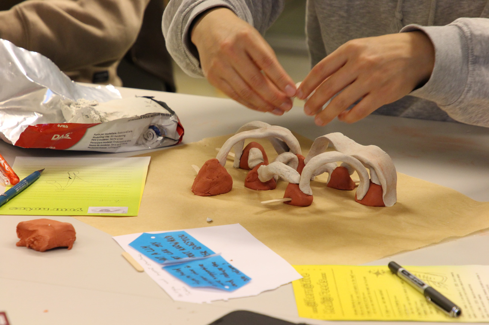
A participant working on an alternative LLM design. Blue tags show prompts created from a different workshop that they have to respond to.
Alternative Media Feeds is the second workshop in a series exploring the relationship between our bodies and algorithmic media systems. Participants used prompts co-created during the previous workshop Warm Clouds over the Cool Planet. The prompts were used as starting points to imagine and design alternatives to the current dominant media feeds, broadly understood to include social media feeds, recommendation algorithms, and LLMs as a contemporary extension of the feed.
The workshop drew from Participatory Speculative Design[1] and Speculative Fabulation[2], creating a space for people to think beyond existing systems, disagree with dominant narratives and even each other, and make something together. Rather than prompting an LLM, participants had to respond to the prompts themselves using their bodies.
The session was co-facilitated and included 9 participants from diverse backgrounds. The smaller group size than planned actually allowed for a more intimate setting, where shyer participants had more chances to speak, and the facilitators could join as participants themselves rather than leading from a distance.
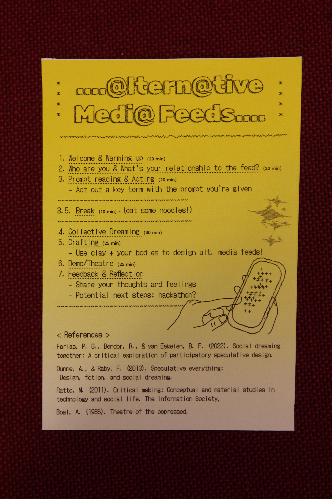
The workshop manual listing the programme for the night.
Programme
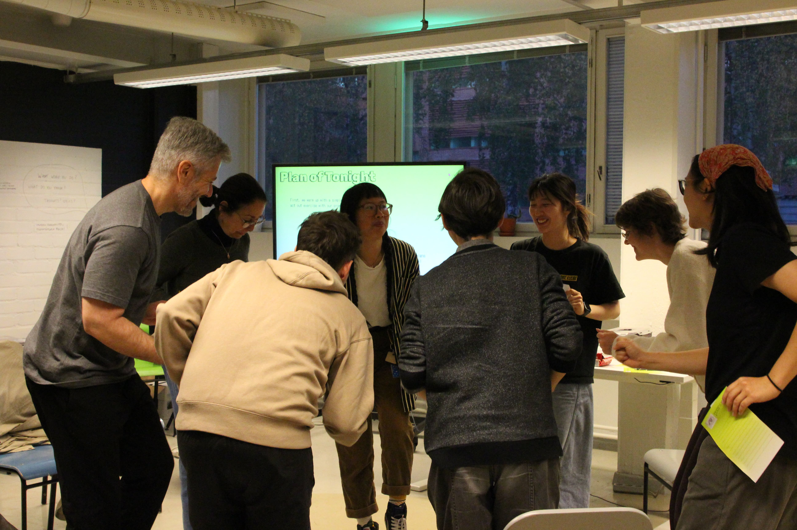
Acting exercise: participants standing in a circle, acting out key terms from their prompts while everyone follows and tries to guess what the prompt is.
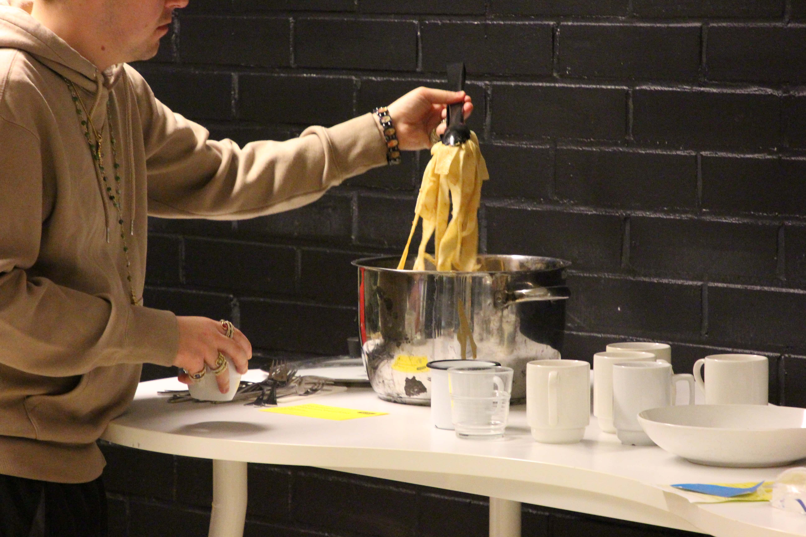
Snack time during the break! Food - slippery noodles and cookies - was made in response to the pre-workshop prompts that asked: if you could touch or taste the feed, what would it feel like?
On the "Feed"
The session opened with a short etymology of the feed. The feed, first used to refer to human and animal bodies, expanded to describe machinery in the sevententh century. Today, it commonly refers to scrollable digital interface of social media and news platforms (and often the two are combined into one). One participant noted that "bacheca", which means a physical message board in Italian, was the word that referred to Facebook wall or feed in Italy. The word has since been replaced by English word "feed" itself. Many other cultures similarly adopted the word "feed" to describe the digital interface.
We then opened up the discussion on each person's relationship to the feed. Most participants had mixed feelings towards the feed, seeing both the good and the bad of it. One described their relationship to the feed as "on-and-off," as if describing a human relationship. Two had deactivated their Instagram to focus on studies. One loved the feed for ceramics inspiration but hated seeing bad news. Another said they only have positive feelings towards it, as they use it for work. One participant doesn't use the feed at all.
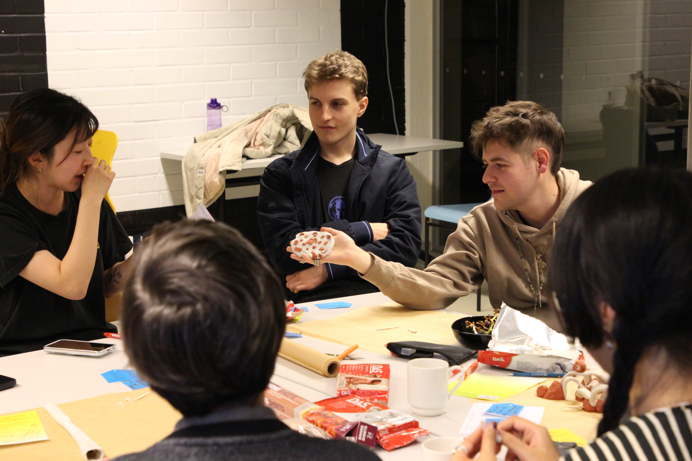
Groups worked with clay, paper, pens, and their bodies to design their alternative feed.
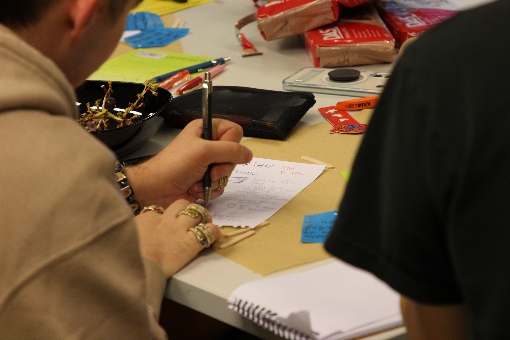
Participants sketching and writing during the collective dreaming phase.
Dreaming & crafting
During this phase, participants were divided into random pairs or groups of three. They were to discuss their designated prompts and to "dream" or imagine a media feed system or a component related to it.
Diverse perspectives filled the room. There were frequent disagreements in the pair or group discussions, and that felt like a good thing. In one group, all three members had entirely different opinions and struggled to settle on a direction in their design. They expanded their design to fit everyone's thoughts. One participant questioned the value of speculative design, while others embraced it from the beginning and found it natural.
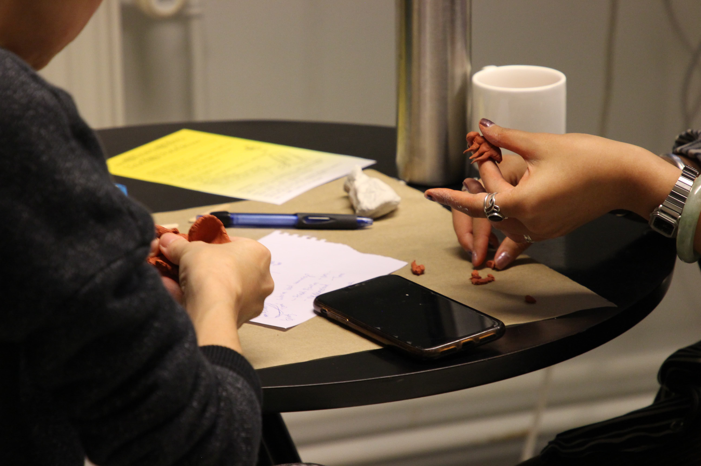
Participants working with clay on Tel(t) the Bees idea.
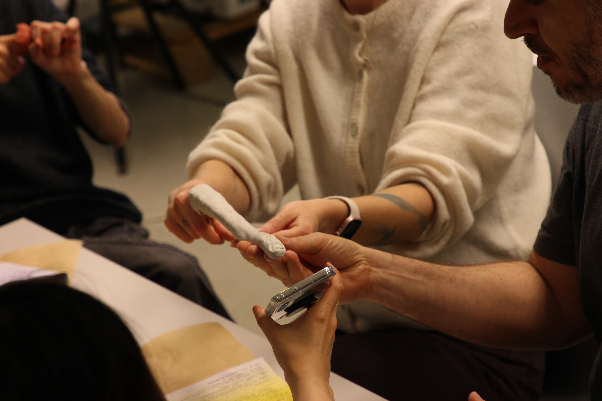
Participants demoing how to use Long Fingers™️
Demo
There were four groups, and they all came up with very different creations depending on the prompts (in blue tags): a more-than-human telecommunication device, a finger extension tool, a school for media literacy, and an alternative LLM that is transparent about what it doesn't know.
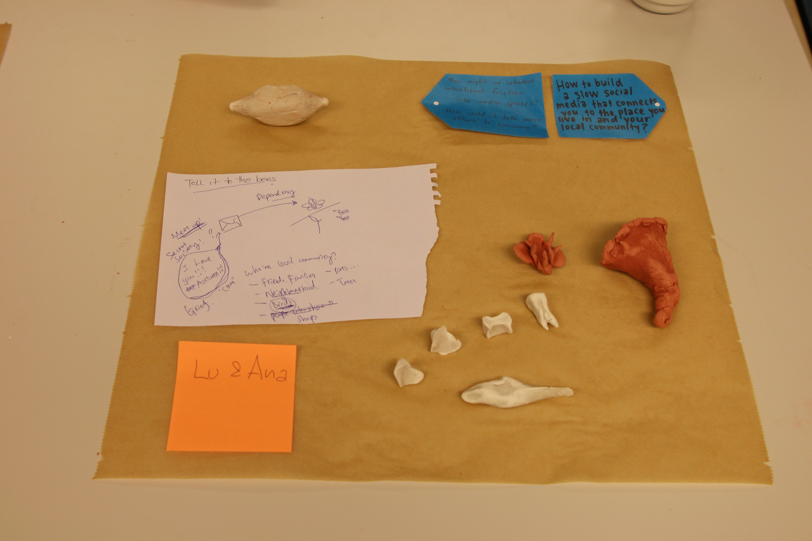
Tel(l) it to the Bees: a communication system where you must talk to a non-human community member using a bioelectricity sensor. It is often meant for a way to grieve. Clay represents a bee, human teeth and bones, a beehive, and a telephone receiver.
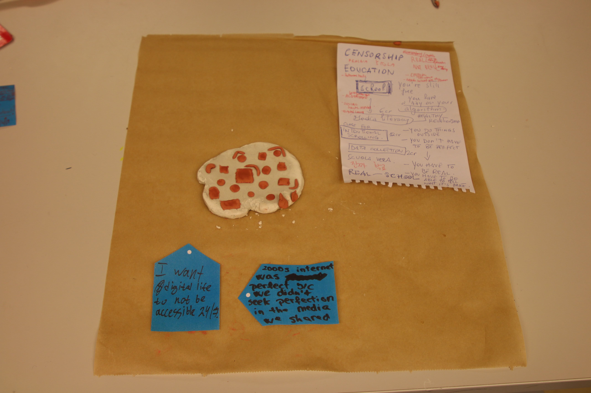
Realiva Šitola: a school for media literacy and algorithmic empowerment. Classes include Intentional Scrolling (12 cr), Software Tools: Plugins and Extensions of Algorithmic Resistance (6 cr), and Social Social Media Workshop (3 cr). Open to students from elementary school to seniors.
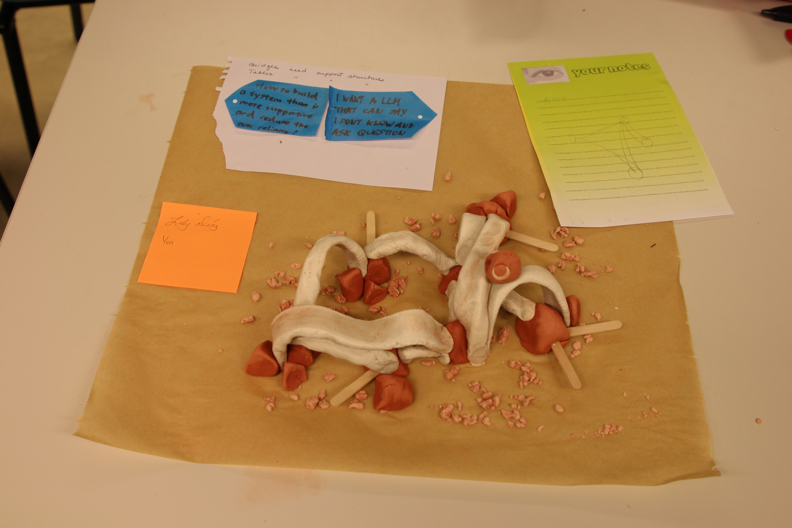
Alternative LLM: red islands of known information connected by white clay bridges, with wooden sticks marking dead ends where an LLM chatbot says "I don't know."
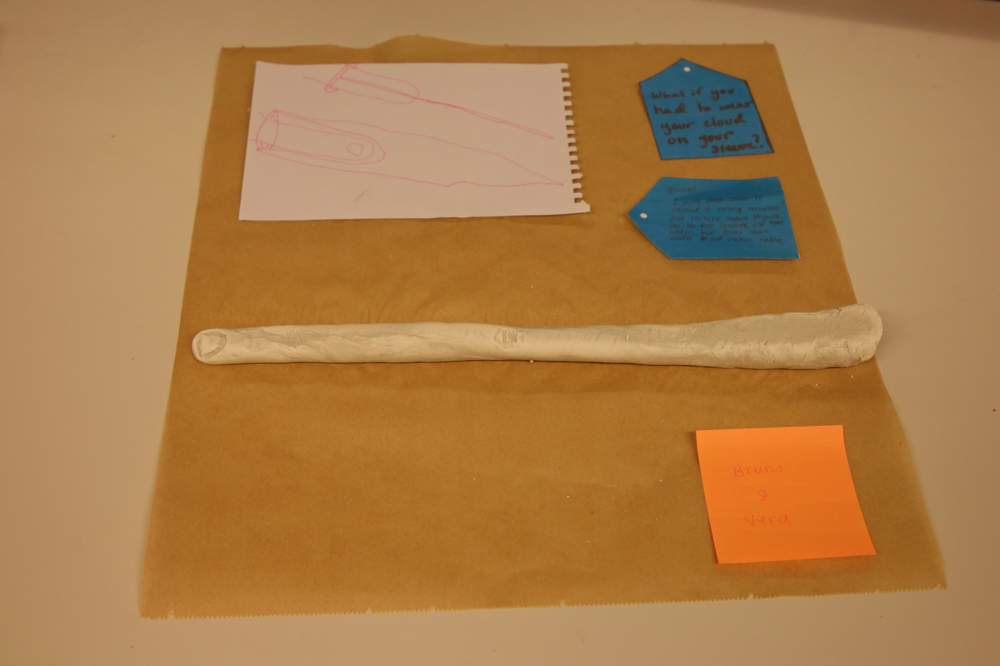
Long Fingers™️: an extra-long finger extension for viewing your screen from afar, reclaiming peripheral vision.
Reflections
The last session, where people shared reflections, surfaced a lot of disagreement about LLMs and media feed. But it stayed polite and productive. One participant noted that it was nice to hear the disagreements: "Big tech makes you think there is only one way, and they sell that idea. But that is not true."
One participant said it was great to be in a space to "confront" one another. Social dreaming turns out not to be smooth at all. It takes work, effort, and confrontation. But these are precisely the things social media does not require of us, so this workshop meant meaningful.
Three participants reflected on the value of working with clay and bodies. Crafting and acting became an embodied approach to the subject of digital interfaces (feed, LLMs) that feel deeply disembodying. One said that because the feed and LLMs removes our bodies from the focus, it is important to put them back. Another said thinking with your hands is a different, and valuable, kind of thinking than thinking with your mind only.
Moving forward
It would be nice to continue crafting alternative media feed systems. An informal session to generate 2–3 more designs from unused prompts would be possible. A hackathon where some of these ideas could actually be built and a website to document all of it would be considered. Some of these clay designs could be remade and turned into more durable ceramics.
Thank you
Thank you to all the participants for your work and ideas in the workshop. Thank you Sergio Ramos for taking the photos.
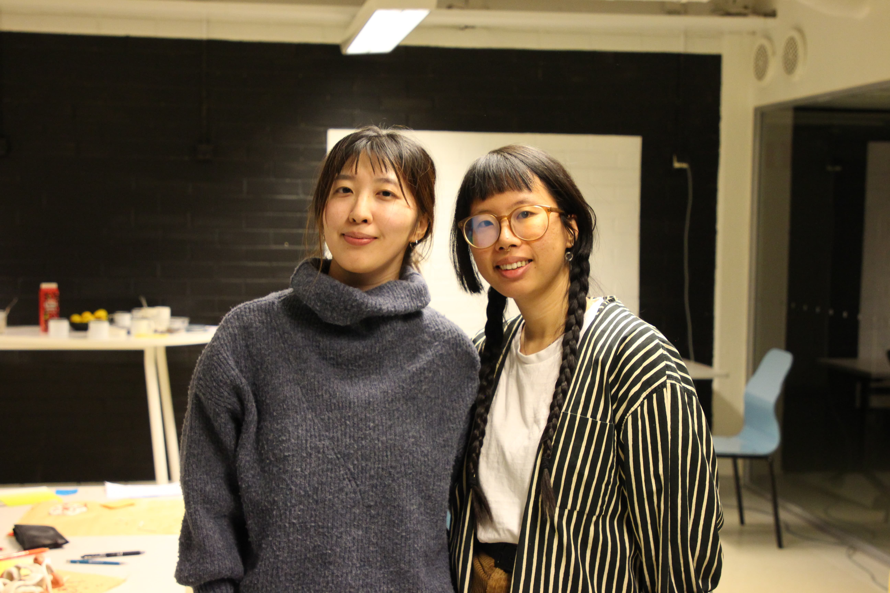
Heya on the left and Lù on the right after leading the workshop. Thanks Lù for being the best co-facilitator!